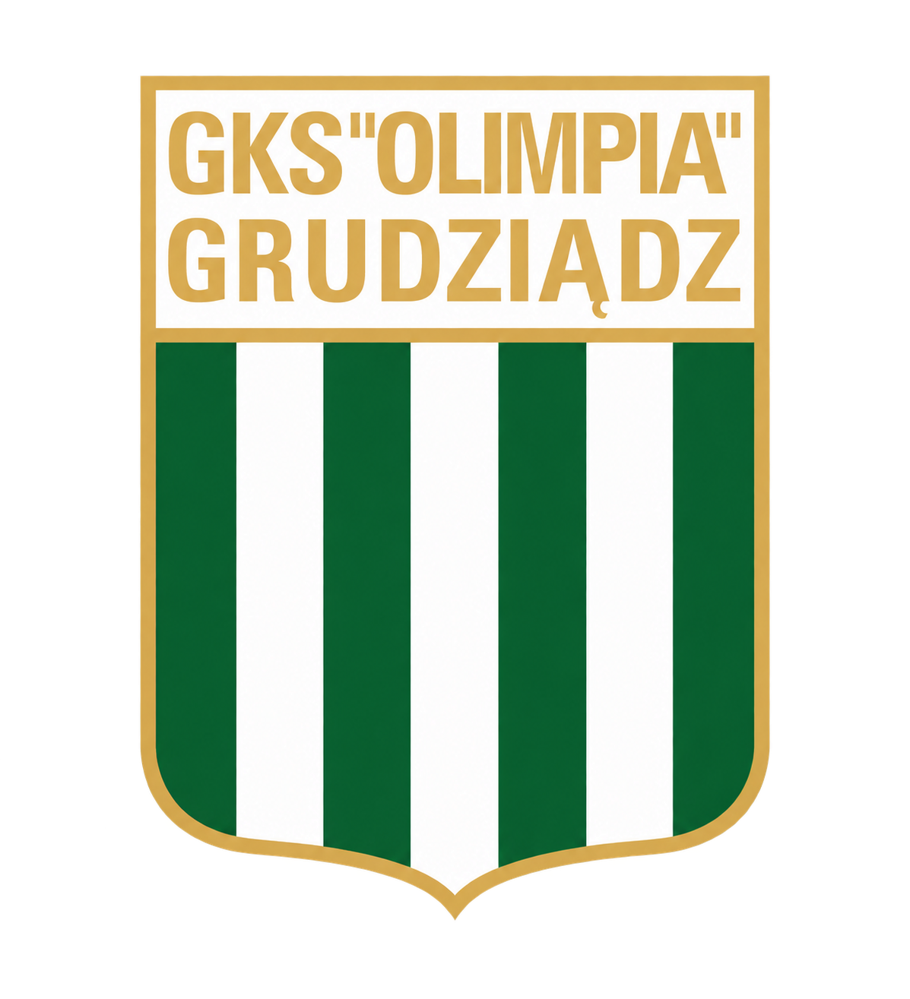

ĆWICZENIE 1 · 2,87 s

GKS OLIMPIA GRUDZIĄDZ · PREP PRO
Komplet 5 etapów — 20 pokazów ruchu
Uruchom film, aby obejrzeć go w pętli. Każdy pokaz jest bez dźwięku, w naturalnym tempie.
Otwórz aplikację z timerem →Etap 1 · Mobilność i podniesienie temperatury
ĆWICZENIE 2 · 4,77 s
Mobilizacja stawu skokowego w wykroku
ĆWICZENIE 3 · 7,03 s
Wykrok z rotacją tułowia
ĆWICZENIE 4 · 5,80 s
Mobilizacja bioder 90/90
ĆWICZENIE 5 · 3,27 s
Wspięcia na palce
Etap 2 · Aktywacja pośladków i stabilizacji
ĆWICZENIE 6 · 4,63 s
Chód bokiem z gumą nad kolanami
ĆWICZENIE 7 · 4,60 s
Most biodrowy
ĆWICZENIE 8 · 5,60 s
Odwodzenie biodra z gumą
ĆWICZENIE 9 · 5,50 s
Marsz w podporze lub dead bug — wariant dead bug
Etap 3 · Przygotowanie siłowe i kontrola jednonóż
ĆWICZENIE 10 · 2,43 s
Przysiad z masą ciała
ĆWICZENIE 11 · 4,27 s
RDL na jednej nodze bez obciążenia
ĆWICZENIE 12 · 3,37 s
Wspięcie na palce z ugiętym kolanem
ĆWICZENIE 13 · 2,67 s
Pompka klasyczna
Etap 4 · Sprężystość, lądowanie i hamowanie
ĆWICZENIE 14 · 1,97 s
Niskie podskoki obunóż (pogo)
ĆWICZENIE 15 · 5,10 s
Snap-down: szybkie zejście do pozycji atletycznej i zatrzymanie
ĆWICZENIE 16 · 2,00 s
Podskoki obunóż z unoszeniem kolan
ĆWICZENIE 17 · 5,23 s
Przeskoki z nogi na nogę
Etap 5 · Aktywacja szybkościowa
ĆWICZENIE 18 · 1,63 s
Szybkie stopy w miejscu
ĆWICZENIE 19 · 3,50 s
Starty z pozycji atletycznej
ĆWICZENIE 20 · 3,30 s